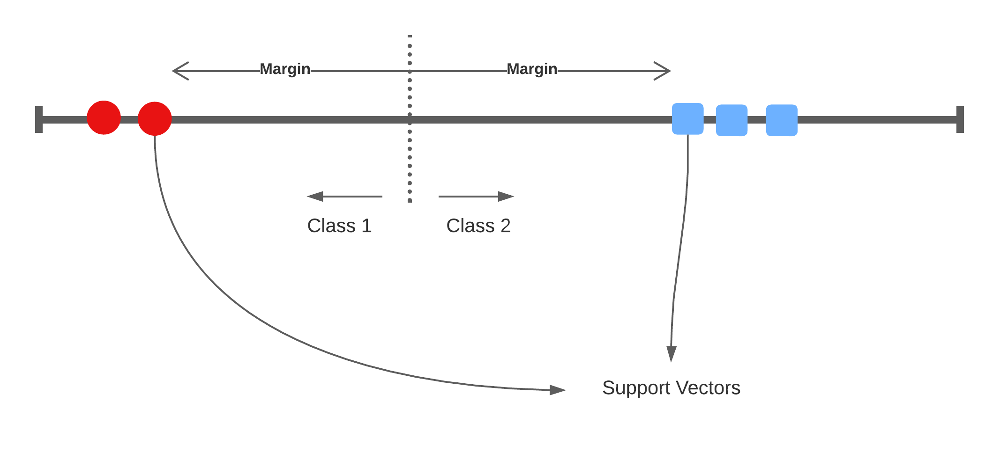

Support Vector Machines
Lecture 4
A 1-dimensional example

Widest margin


Support vectors

Bias/Variance trade-off: If one of these support vectors changes then the maximal margin classifier will drastically change. This model has low bias, and high variance.

Accounting for miss-classifications

\[ y_i (\beta_0 + x \beta_1) \geq M (1 - \varepsilon_i) \]
This type of classifier is called the Support Vector Classifier with a soft-margin as it allows for miss-classifications to reduce the model’s variance.
where \(\varepsilon_i\) is the positive slack variable for each data point. In practice, the sum of all slack variables are bound by a user-defined norm: \(\sum_i \varepsilon_i \leq D\), where \(D\) is the tolerance for violating the margin of the SVC hyperplane.
There are three scenarios given the slack variable:
- \(\varepsilon_i = 0\) the data point lies on the correct side of the hyperplane and not within the margin (i.e. the point is correctly classified).
- \(\varepsilon_i > 0\) the point lies with the margin but on the correct side of the separator.
- \(\varepsilon_i > 1\) the point lies on the wrong side of the separator (i.e. that the data point is miss-classified).
Solution of the optimisation problem can be re-framed as unknown parameters (\(\alpha\)) of the function \(f(x)\) and the inner product to all other support vectors:
\[ f(x) = \beta_0 + \sum_{i=1}^m \alpha_i \langle x, x_i \rangle \]
As the constant \(\beta_0\) the number of allowed miss-classifications increases also.
1-dimensional
- 1 dimensional space with a 0-dimensional separator, a point.
- flat affine 0-dimensional subspace
2-dimensional

- 2 dimensional space with a 1-dimensional separator, a line
- flat affine 1-dimensional subspace
How do we separate this space

Add dimensionality
We’ll take this 1-dimensional space, and add another dimension where the y-axis is \(x^2\). Suddenly, we’re able to separate the space: